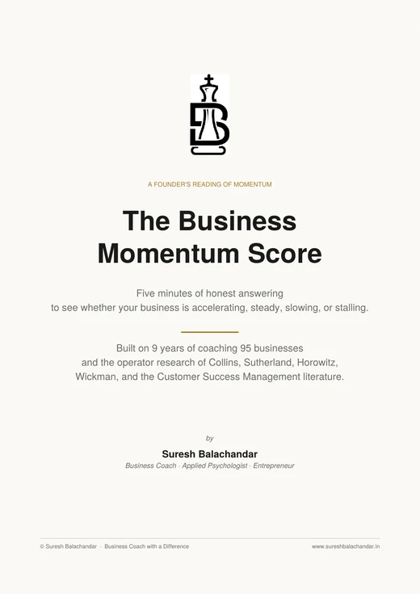

05 · One to one · By application
SPRINT
Specific Problem Recognition and Implementation of Next level Transformation
This is a focused engagement of 8 sessions across 8 weeks. It takes 1 structural bottleneck in your business and turns its removal into a permanent, documented system. It removes 1 key issue for good.
Talk to me about SPRINT Take the free reading first
Is your business accelerating, steady, slowing, or stalling? The Business Momentum Score tells you in 5 minutes, free. Take the reading now.
- 8 sessionsacross 8 weeks
- 1 on 1with me, on 1 bottleneck
- Zoom, Meet or my roomwhichever suits you
- By applicationa small number at a time
01 Take this before you talk to me
The first reading is free, and it takes 5 minutes.
The Business Momentum Score is 5 minutes of honest answering, and it tells you whether your business is accelerating, steady, slowing, or stalling. If the reading is comfortable, keep it, and we are done. If it shows momentum leaking somewhere specific, that is usually a bottleneck talking, and this page explains what I do about those.

5 minutesFree download
The Business Momentum Score
5 minutes of honest answering to see whether your business is accelerating, steady, slowing, or stalling.
02 Why this exists
Your business has grown past the solutions that got it here.
There are 1 or 2 specific things limiting how much more your business can do, and you know roughly what they are. Sales that depend entirely on you. An operation that breaks every time you step away. A team that produces inconsistently. A marketing spend nobody can defend.
A real bottleneck has a specific structure, specific people, and a specific history. A half day workshop hands you the tool kit for a layer. It cannot rebuild the structure for you, and neither can a slide deck. Rebuilding the structure is 8 weeks of work on that one thing, and that is what SPRINT is.
03 What SPRINT does
4 things, in order, and the last one is what solved forever means.
- 01It surfaces the one bottleneck most worth solving first. That is not the loudest one and it is not the most obvious one. It is the one whose removal would change the most about your business this year.
- 02It designs a structural fix that addresses the root cause rather than the symptom. Workarounds make founders feel better. Structural fixes make businesses better.
- 03It drives execution with weekly accountability. You commit to milestones, I hold the line, and friction is surfaced and resolved while it is still solvable.
- 04It documents the solution as a system. The fix lives in writing, owned by your team, designed to run without you. That is what solved forever actually means.
04 How it works
The 8 weeks run in 3 phases.
- 01See the bottleneck clearlyThis is sessions 1 to 3. We confirm or diagnose which bottleneck it is, map the current state, and surface the root causes.
- 02Design the structural fixThis is sessions 4 to 5. We architect the solution, stress test it with you, and lock the milestones, the owners, and the success measure in writing.
- 03Systemise the solutionThis is sessions 6 to 8. We execute with weekly accountability, document the system, and close the loop with ownership transferred to your team and the maintenance rhythm scheduled.
The sessions run on Zoom, on Google Meet, or in my room in Chennai, one to one.
05 Who it is for
SPRINT works on its own. RAAG makes it sharper.
- 01Founders who have done RAAG and want to act on what it surfaced.
- 02Founders who already know which bottleneck is hurting the business and want a structured way to remove it.
- 03Founders who are considering longer coaching and want to see first what working with me is actually like.
RAAG is not a precondition. The first sessions of SPRINT carry their own diagnosis, so the seeing gets done before anything is designed, whether you arrive with a RAAG verdict in hand or with nothing but the symptom. What RAAG gives you is a cheaper way to decide. For ₹3,000 and 2 hours it names the constraint, and it tells you whether SPRINT is even the right instrument for it.
06 The application
SPRINT engagements are limited, deliberately.
I run a small number of SPRINT engagements at a time, because weekly accountability does not scale and I will not pretend it does. That is a fact about capacity rather than a reason to hurry.
Reach out, and we will discuss whether your situation is the right fit. Pricing and availability are discussed in that conversation, and if SPRINT is not the right instrument I will say so and point you at what is.
→ Where this sits